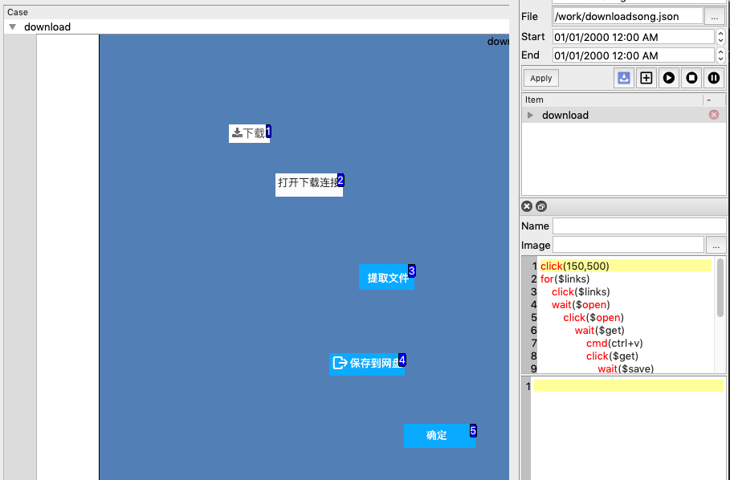

AutoMan
Mac Version Windows Version Linux Version
AutoMan is an application base on OpenCV/Qt5.12.4. It can use to do automation testing, or do some repeated work.
Here is a exsample. I want to download all music from sq688.com, but it is a boring work if you had tried to do so. Here is the way I used AutoMan to finish download music of Michael Jackson https://www.sq688.com/detail/463.html
Step 1: Find the link of album of Michael Jackson. https://www.sq688.com/detail/463.html
Step 2: Downlaod one song from this site and record the steps and those key screenshot.
Step 3: Make a script to repeat those steps:
open(https://www.sq688.com/detail/463.html)
for($links)
click($links)
wait($open)
click($open)
wait($get)
cmd(ctrl+v)
click($get)
wait($save)
click($save)
wait($ok)
click($ok)
cmd(ctrl+w)
cmd(ctrl+w)
In this sample, AutoMan will use OpenCV to find out all elments like links, and click them, in the subsquent web, find the object like open, get, save, ok and click, in the middle of them, call a shotcut "Ctrl+V" to paste the content in clipboard to a text area, when all steps are done, call another two shotcut "Ctrl+w" to close a web tab.
